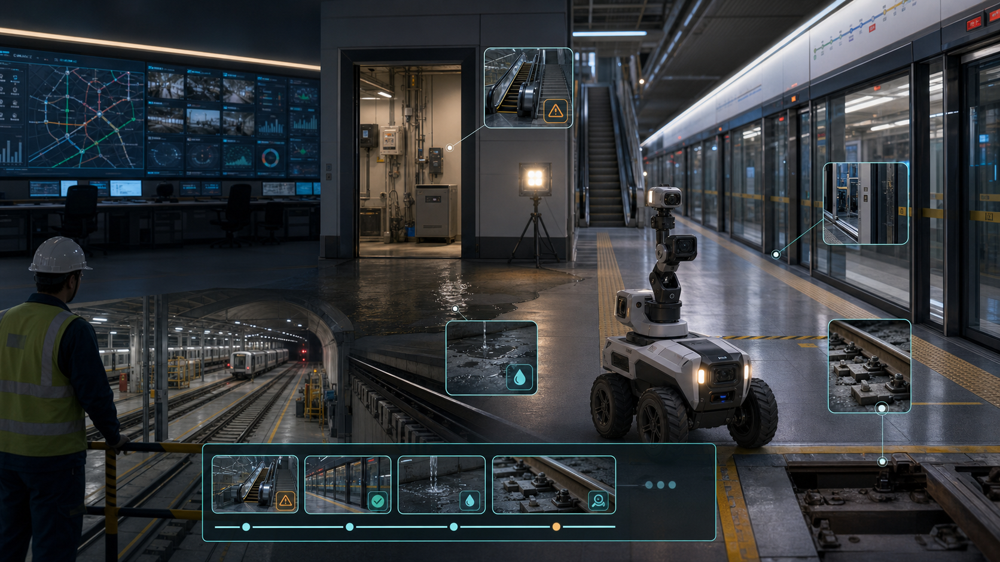

系统会响
CCTV、综合监控、BAS/FAS、PSD、扶梯、电力、泵房和机器人都能产生信号。
Pitch 71 · Vendor-Neutral Exception Closure For Rail & Metro
RailLoop 是面向地铁和城轨运营的异常闭环层。它把 CCTV、ISCS、BAS/FAS、站台门、电扶梯、泵房、防汛、巡检机器人、人工巡检、乘客投诉和 EAM/CMMS 工单合并成有责任、有证据、有复核、有销号的运营事实链。
01 · Problem
一次站台门卡滞，可能同时产生视频片段、门机告警、站务电话、微信群消息、OCC 记录、乘客投诉、维修工单、委外照片和复盘材料。每个系统都在记录，但没有一个系统负责把它从发现一路关到可审计销号。
CCTV、综合监控、BAS/FAS、PSD、扶梯、电力、泵房和机器人都能产生信号。
值班站长、OCC、设备维保、安全质量、委外单位和数字化部门反复对齐上下文。
很多证据在事后被整理进表格、PDF、截图和周报，难以实时追责和复盘。
误报、重复故障、处置路径和验收标准没有自然沉淀成训练数据和 SOP 资产。
02 · Why We Solve It
轨交不是普通 SaaS 场景。小异常会被客流、班次、换乘、舆情和监管放大。RailLoop 选择“闭环”作为切口，是因为它同时连接一线运营、设施设备、安全合规、财务采购和 AI 训练数据。
告警噪声和处置迟滞会放大运营延误，尤其在早晚高峰和换乘站。
电扶梯、站台门、泵房和关键机房停运会形成可见服务质量损失。
极端天气下，出入口、风亭、泵房、隧道和连接地下空间需要证据化值守。
风险库、隐患排查、整改、复核、销号和信息共享已经是制度语言。
维保质量、返工、验收争议和发票支持材料都需要标准化证据链。
03 · Why Now
中国城轨规模已经足够大，新增建设投资开始放缓，老线设备更新、智能运维、安全治理和防汛韧性变得更重要。海外市场同时面对巨额 state-of-good-repair backlog。机器人和视觉 AI 已能发现更多异常，但客户真正愿意买单的是“发现之后谁负责、怎么修、如何验收、能不能复盘”。
04 · Insight
检测模型卖的是概率，闭环系统卖的是责任。RailLoop 的核心资产不是某个单点识别算法，而是把异常 ID 贯穿检测、派发、处置、复拍、验收、台账、复盘和训练集。每一次销号都是一个可学习样本。
把视频、设备、巡检、投诉和工单合并成带位置、资产、等级和责任岗位的案件。
用复拍图像、传感器恢复、SOP 勾选、维修记录和人工验收形成证据包。
把误报、重复故障、最终原因和销号结论写回风险库、SOP 和 LeRobot 数据集。
05 · Solution
它不替代 CBTC/ATP、OCC 调度、综合监控、SCADA、EAM/CMMS、设备厂商诊断、视频平台或检修人员。它只做一件事：把所有异常变成一个可派发、可复核、可审计、可学习的闭环案件。

06 · First Product
不要把首单卖成“全线智能轨交大脑”。最佳切口是一条既有线、3-5 个高客流车站、50-150 个资产点、3-5 类异常。先把闭环率、证据完整率和人工报表工时打下来，再扩到线网级资产健康。
门体告警、异物、复拍、站务处置、维保复核和重复故障归因。
停运、围挡、巡检、维保、恢复、乘客影响和可用率报表。
积水、雨情、泵房、出入口、风亭、隧道和站端值守证据。
变电所、通信、信号、BAS/FAS 机房异常由机器人和人工共同复核。
扣件、异物、线缆、渗漏和标识异常进入只读巡检证据链。
07 · Market
同一个产品内核，两套商业话语。中国客户更关心本地化、等保、隐患排查治理、设施设备运维、设备更新和监管台账；海外客户更关心老旧资产、可达性、电梯扶梯可用性、洪涝韧性、资本计划和审计报告。
部署在运营方私有云或本地机房，围绕安全质量部、设施设备部、机电中心、通号中心、工务中心、车站管理部和信息中心展开。采购关键词是智慧运维、隐患排查治理、设施设备运行维护、运营生产数字化、防汛防淹和设备更新。
从 EAM/CMMS、station assets、accessibility、flood resilience、inspection evidence 和 capital planning 进入。首个模块不挑战信号和调度，而是帮运营方把高频资产故障变成可量化的工作订单、验收证据和投资优先级。
08 · Business Model
RailLoop 的付费理由不是“我们用了 AI”，而是“每个月少多少逾期隐患、少多少重复工单、少多少人工补报表、提升多少可用率、减少多少验收争议”。
90-120 天，人民币 30万-80万，覆盖 1 条线、3-5 个站、50-150 个资产点和 3-5 类异常。
每条线人民币 80万-250万/年；集团线网版人民币 500万-2000万/年；集成另计。
75k-200k 美元，聚焦 accessibility assets、flood readiness、station defects 和 EAM evidence。
每条线或设备域 250k-750k 美元/年；大型运营商 1M-3M 美元/年。
09 · ROI
年化收益 = 延误与乘客影响减少 + 资产停运时间减少 + 重复故障减少 + 人工报表工时减少 + 委外验收争议减少 + 防汛与审计风险降低。试点只认 RailLoop 能影响的部分，按 50%-70% attribution 计算回本。
95%+ 试点资产映射到 EAM/CMMS ID、站点、设备域和责任岗位。
90%+ 已关闭异常包含图片、状态、负责人、时间戳、复核结论和工单链接。
告警到工单/处置卡时间下降 30%，逾期高风险隐患下降 20%。
巡检整理、周报、复盘和审计材料准备工时下降 20%-30%。
首年费用控制在经验证收益的 15%-25%，目标 12 个月内回本。
10 · Go-To-Market
RailLoop 的第一性客户不是泛数字化部门，而是每天背指标的人：运营管理中心、设施设备部、机电中心、通号中心、工务中心、安质部、车站管理部、OCC 统计和委外维保管理。机器人是证据采集能力，闭环才是采购语言。
站台门 + 电扶梯 + 防汛防淹 + 工单证据，选高频、可量化、非控制场景。
城轨系统集成商、设备厂商、维保服务商、设计院和本地机器人 OEM。
EAM/CMMS 伙伴、轨交 OEM、咨询工程公司、资产管理与韧性项目。
从一条线的闭环率扩到线网风险库、委外考核、更新改造排序和训练数据资产。
11 · Competition
Siemens、Alstom、Hitachi、Wabtec、Stadler、IBM Maximo、Hexagon、Bentley、Trimble、KONUX、Rail Vision、ANYbotics、Boston Dynamics Spot 和各类站端系统都能产生数据或动作。RailLoop 的定位是把这些输出变成跨系统的案件、证据和销号。
CBTC、ATP、ATS、OCC、SCADA、综合监控继续做控制和监视，RailLoop 只读接入。
EAM/CMMS 继续做资产和工单系统记录，RailLoop 提供异常上下文和证据包。
视觉 AI、轨检车、传感器和设备诊断继续发现问题，RailLoop 负责去重和闭环。
机器人继续巡检和复拍，RailLoop 决定何时派、拍什么、如何验收和如何学习。
12 · Moat
上线时间越长，RailLoop 越知道每条线的设备命名、SOP、责任岗位、委外质量、重复故障、误报模式、复核标准和证据缺口。这个数据不是公开数据集，也不是通用大模型能直接拥有的业务资产。
站点、设备、时间、图片、告警、工单、处置、验收和复盘形成事实链。
把风险数据库、隐患手册、一岗一册、现场处置和最终销号连接起来。
每类异常定义关闭条件：照片角度、设备状态、复扫结果、负责人和时间戳。
已销号事件给视觉模型、优先级模型和 LeRobot inspection policy 提供真实 verdict。
13 · Architecture
工程原则是只读、隔离、人审、本地优先。所有真实运营动作仍由合格人员和既有系统完成；RailLoop 提供关联、证据、派发、复核、报表和训练数据。
14 · Demo
安全边界必须清楚：2-3 米模块化桌面站台，5/12/24V 限流电源，透明护罩，急停切断电机电源，泡棉异物，可替换缺陷板，水盘与低压泵隔离，所有真实控制只在 UI 中模拟。AI 可以建议，最终关闭由确定性检查和人工确认完成。
亚克力站台门、泡棉异物、RGB/depth、门位和电流异常，移除后复拍销号。
低压电机皮带/升降台替代扶梯，电流、热像和编码器模拟卡滞与恢复。
水盘、漏水传感器、蓝色亚克力水位片和泵房状态，演示防汛值守闭环。
轨旁缺陷板、渗漏贴片、异物和缺扣件由巡检小车/龙门复拍形成证据。
ROS 2 topics、QNN perception path、LeRobot episode、工单证据包和审计导出。
15 · Why Qualcomm
轨交站端视频多、隐私强、弱网多、响应窗口短，不能把所有原始数据都丢到云端。Qualcomm 的边缘 AI、相机/多媒体、IoT 连接、AI Hub/QNN 编译和机器人开发板路线，正好对应 RailLoop 的站端边缘盒与巡检机器人。
站台门、扶梯、积水、异物、设备间和轨旁缺陷先在站端筛选。
RGB、depth、thermal、vibration、odometry 和安全状态形成复核证据。
私有化、数据驻留、模型签名、证据哈希、权限和操作日志适配轨交采购。
QNN profiling 和 AI Hub compile path 可以成为评委看得见的性能证据。
16 · Ask
我们需要的不只是开发板，而是让样机能进入真实运营讨论的组合资源：边缘硬件、QNN 优化、轨交场景导师、集成伙伴和安全边界评审。
RB3/RB5/Dragonwing 路线建议、AI Hub/QNN 编译、profiling 和多路视频样机指导。
2 个站端流程、3 类真实异常样本、1 条既有线或车辆段专家评审。
城轨系统集成商、机器人 OEM、站端设备厂商、维保服务商和安全顾问。
共同定义低压桌面 Demo、只读集成、人审关闭和不碰行车控制的公开表述。
17 · Claims & Sources
RailLoop 主张低压桌面样机、只读系统集成、人审闭环、证据包、台账销号、LeRobot 数据导出和 Qualcomm edge/QNN 候选路径。它不主张替代合格检修人员，不控制列车、信号、供电或调度，不承诺上线前的实时 NPU 指标，不声称铁路安全认证。
一句话 pitch：RailLoop 把轨交异常从“发现了、转发了、记录了”推进到“有人负责、有证据、有复核、有销号、有训练数据”。